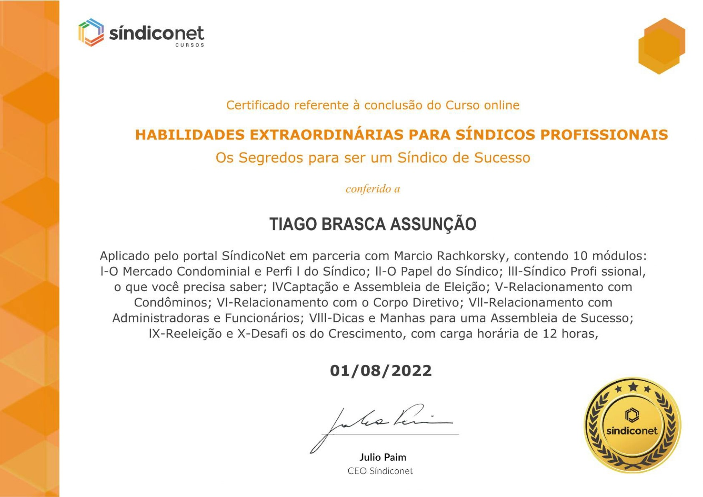
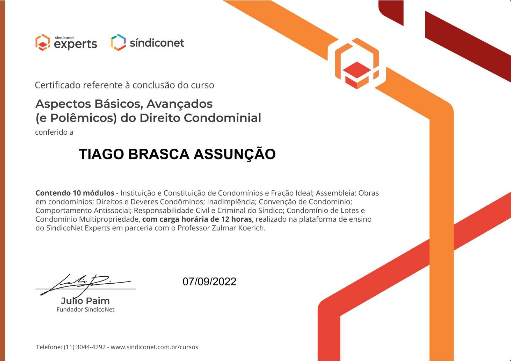

Formação Técnica e Certificações (68 Horas)
Capacitação completa pelo SíndicoNet Experts cobrindo as áreas jurídica, trabalhista, financeira, administrativa e de engenharia predial (clique na imagem para ampliar):

Formação de Síndicos Profissionais e Gestores Condominiais
15 módulos cobrindo fundamentos jurídicos, assembleias sem riscos, manutenção planejada, seguros, gestão financeira, auditoria, cobrança de inadimplentes e mediação de conflitos.

Especialização Avançada de Síndicos Profissionais e Gestores Condominiais
18 módulos focados em implantação de condomínios, plano diretor, compliance e LGPD, gestão de condomínios clube, otimização de custos e liderança de equipes.

Habilidades Extraordinárias para Síndicos Profissionais
10 módulos sobre condução estratégica de assembleias, relacionamento com condôminos, conselho diretivo, administradora e funcionários.

Gestão de Manutenção Predial para Síndicos e Gestores Prediais
6 módulos sobre planos de manutenção preventiva, gestão de equipamentos e sistemas prediais, rotina com zeladoria e manejo documental normativo.

Questões Trabalhistas e eSocial em Condomínios
5 módulos abrangendo contratação, vigência de contrato de trabalho, obrigações do eSocial, reforma trabalhista e procedimentos de rescisão.

Aspectos Básicos, Avançados (e Polêmicos) do Direito Condominial
10 módulos sobre convenção de condomínio, obras, direitos e deveres, inadimplência, comportamento antissocial e responsabilidade civil e criminal do síndico.
Pronto para elevar a gestão do seu condomínio?
Agende uma visita técnica gratuita de 40 minutos sem compromisso para avaliarmos as prioridades e manutenções obrigatórias do seu prédio.